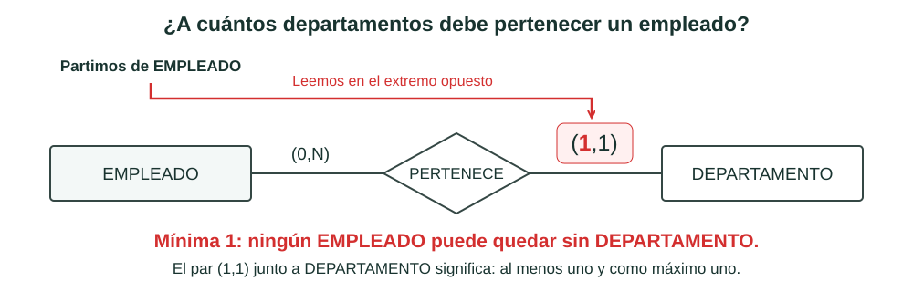
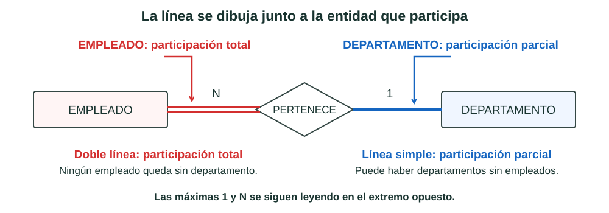
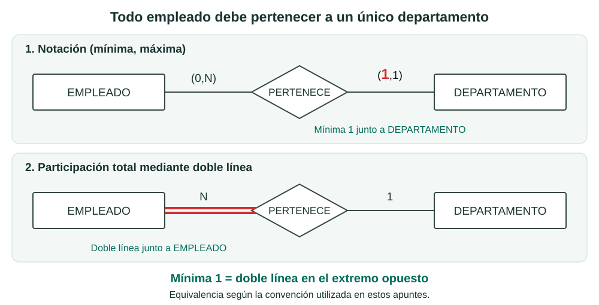
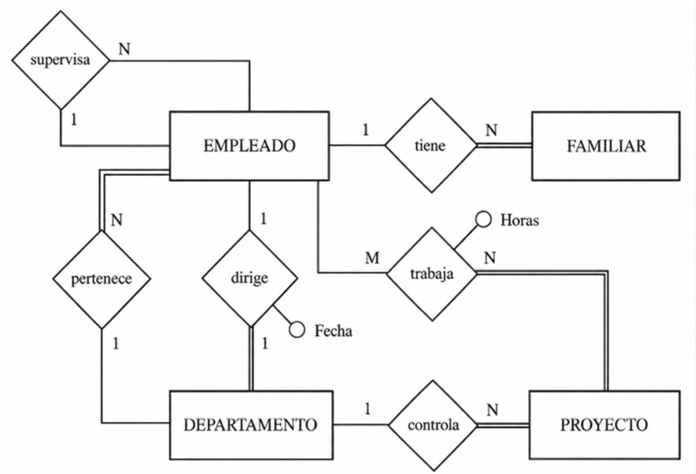
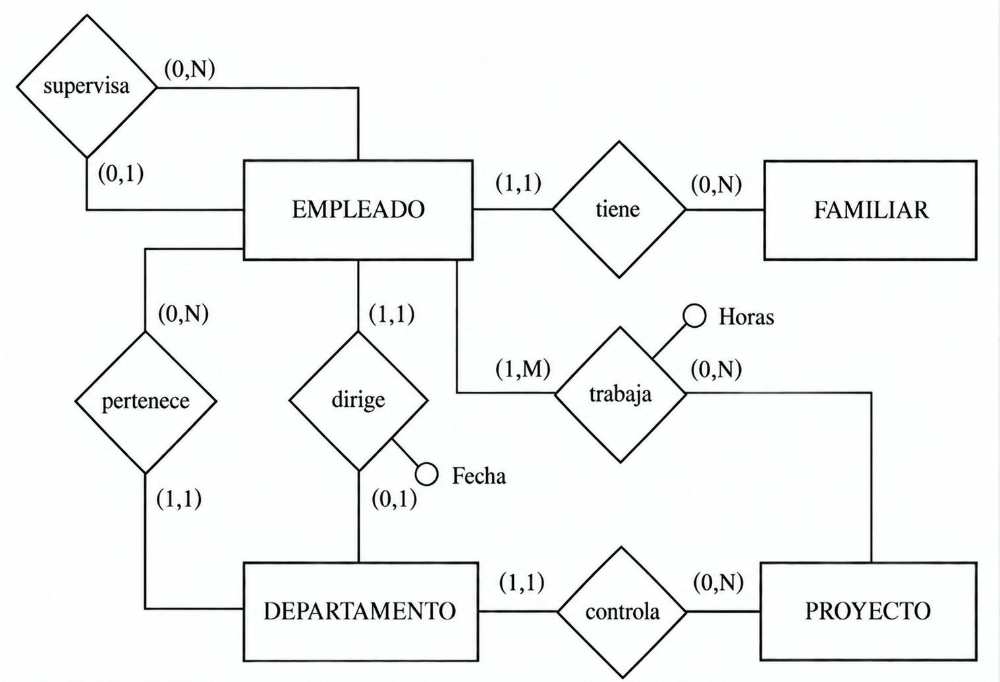
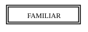
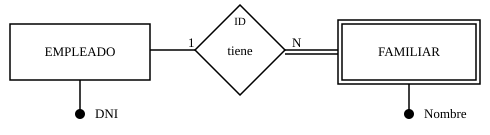
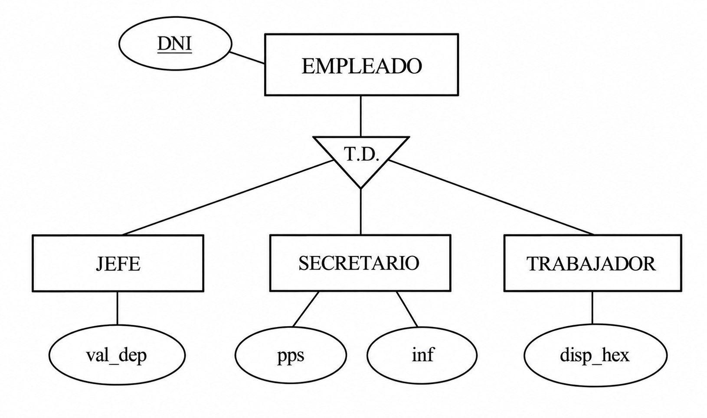
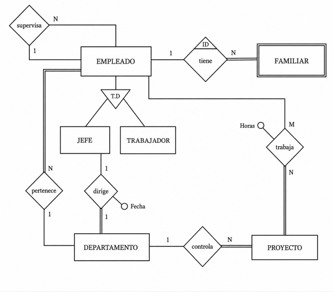

5. Modelo E/R Extendido
El modelo E/R que hemos visto hasta ahora es muy potente, pero en algunos casos se queda corto para representar restricciones reales del sistema.
Por ejemplo:
- de FAMILIAR solo nos interesan los familiares de EMPLEADOS,
- si un empleado deja la empresa, sus familiares dejan de interesarnos,
- y no todas las entidades participan igual en una relación 1:1.
Para cubrir estos casos usamos el Modelo Entidad-Relación Extendido (EER).
5.1 Cardinalidad máxima y mínima. Participación total
Hasta ahora hemos indicado cuántas ocurrencias pueden relacionarse como máximo. Ahora veremos cómo indicar también si participar es obligatorio u opcional.
1. El par (mínima, máxima)
El par (mínima, máxima) indica con cuántas ocurrencias de la otra entidad puede relacionarse una ocurrencia:
- La mínima indica si participar es opcional (0) u obligatorio (1): puede no relacionarse con ninguna o debe relacionarse al menos con una.
- La máxima indica con cuántas puede relacionarse como máximo: una (1) o muchas (N).
| Cardinalidad | Significado |
|---|---|
| (0,1) | Puede no relacionarse; si lo hace, como máximo con una |
| (1,1) | Debe relacionarse exactamente con una |
| (0,N) | Puede no relacionarse; si lo hace, puede ser con muchas |
| (1,N) | Debe relacionarse al menos con una y puede hacerlo con muchas |
¿Dónde se escribe el par?
Seguimos la misma convención que ya usábamos para la máxima: se escribe en el extremo opuesto a la entidad que estamos considerando. Para expresar que cada EMPLEADO debe pertenecer a un único departamento, escribimos (1,1) junto a DEPARTAMENTO.
La mínima no cambia dónde se escribe la máxima: la acompaña en ese mismo lugar, dando continuidad a la notación que ya conocíamos.

2. Participación total o parcial
La participación indica si todas las ocurrencias de una entidad deben intervenir en la relación o si puede haber alguna que no lo haga:
- Total: todas deben participar. Se representa con doble línea.
- Parcial: puede haber ocurrencias que no participen. Se representa con línea simple.
Idea clave
En realidad, esto es lo mismo que ya expresaba la cardinalidad mínima: obligatorio (1) equivale a participación total, y opcional (0) equivale a participación parcial. Más adelante, en el punto 3, veremos cómo se relacionan ambas representaciones.
Representación
La línea se dibuja junto a la propia entidad cuya participación describimos. Los números 1 o N siguen indicando la cardinalidad máxima.
Por ejemplo, si ningún EMPLEADO puede quedar sin departamento, la participación de EMPLEADO es total: dibujamos una doble línea junto a EMPLEADO. Si puede haber departamentos sin empleados, la participación de DEPARTAMENTO es parcial: dibujamos una línea simple junto a DEPARTAMENTO

3. ¿Cómo se relacionan ambas representaciones?
Idea clave
La cardinalidad mínima está directamente relacionada con la participación total o parcial.
Ahora podemos conectar las dos formas de representarlo:
| Cardinalidad mínima | Equivale a | Representación de la participación |
|---|---|---|
| 1: obligatorio | Participación total | Doble línea |
| 0: opcional | Participación parcial | Línea simple |
«Todo empleado pertenece a un departamento» significa que pertenecer es obligatorio: cada empleado se relaciona al menos con uno. Por eso podemos expresarlo mediante mínima 1 o mediante participación total de EMPLEADO.
La misma condición, en extremos opuestos
En nuestra convención, la mínima 1 junto a DEPARTAMENTO equivale a la doble línea junto a EMPLEADO. Ambas indican que ningún empleado puede quedar sin departamento.
El par se escribe al otro lado; la línea, junto a la entidad cuya participación describimos.

La equivalencia afecta a la mínima. La doble línea significa al menos una vez y sirve tanto para (1,1) como para (1,N); la máxima se indica por separado.
Aplicación al ejemplo
Los siguientes diagramas muestran el mismo ejemplo de Empresa con las dos representaciones.
Ejemplo: Empresa
- La compañía está organizada en departamentos.
-
Cada uno tiene nombre único, número único y un empleado que lo dirige. Nos interesa la fecha en la que comenzó a dirigirlo.
-
Cada departamento controla una serie de proyectos. Cada uno de estos proyectos tiene nombre y número únicos, y estará coordinado por un único departamento.
-
De cada empleado nos interesa el nombre (formado por dos apellidos y nombre de pila), DNI, dirección, teléfono, sueldo y fecha de nacimiento. Todo empleado está asignado a un departamento, y muchas veces tendrá un supervisor. Puede trabajar en más de un proyecto (no necesariamente controlados por el mismo departamento) y trabajará un determinado número de horas a la semana en cada proyecto. En un proyecto siempre trabajará, como mínimo, un empleado.
-
Queremos saber también los familiares de cada empleado, para administrar los términos de un seguro. Queremos saber el nombre, fecha de nacimiento y parentesco con el empleado.
En el ejemplo encontramos estas participaciones obligatorias (mínima 1, equivalentes a doble línea):
- Todo departamento es dirigido por un empleado = No existen departamentos sin director.
- Todo empleado pertenece a un departamento = No existen empleados sin departamento.
- Todo proyecto es controlado por un departamento = No puede haber proyectos que no pertenezcan a ningún departamento.
- Todo familiar es de algún empleado = No hay familiares que no sean de ningún empleado.
- Todo proyecto es trabajado por algún empleado = No hay proyectos en los que no trabaje ningún empleado.
En cambio, «muchas veces tendrá un supervisor» permite que haya empleados sin supervisor: su participación es parcial (mínima 0).
Participación total y parcial

Notación (mínima, máxima)

¿Qué representación utilizaremos?
En estos apuntes utilizaremos la participación total/parcial: doble línea para la participación obligatoria y línea simple para la opcional, manteniendo las cardinalidades máximas 1 o N.
La notación (mínima, máxima) se ha mostrado para reconocer otra forma de expresar la misma información.
5.2 Entidades débiles
No todas las entidades tienen el mismo grado de independencia.
- Las entidades regulares tienen existencia propia.
- Las entidades débiles dependen de otra entidad para existir.
Idea básica
Si desaparece la entidad fuerte de la que depende, las ocurrencias de la entidad débil también deberían desaparecer.
Ejemplo: los familiares de Juan Perez. Si desaparece el EMPLEADO Juan Perez, dejan de tener sentido esos FAMILIARES.
Las entidades débiles se representan con doble rectángulo:

Dependencia en existencia
Cuando una entidad débil depende de otra para existir, decimos que hay dependencia en existencia.
En este caso, la débil participa de forma total en una relación 1:N respecto de la regular.
Dependencia en identificación
Podemos tener un caso más restrictivo: además de depender para existir, la entidad débil necesita la clave de la regular para poder identificarse.
A esto lo llamamos dependencia en identificación. Suele marcarse con ID junto a la relación.
Por ejemplo, FAMILIAR necesita el DNI de EMPLEADO para completar su identificación. El nombre del familiar puede repetirse entre empleados distintos.

En este ejemplo, suponemos que los nombres de los familiares de un mismo empleado no se repiten. Así, cada familiar se identifica mediante DNI del empleado + nombre del familiar.
¿Qué significa ID?
ID indica que la relación es de dependencia en identificación. La clave que aporta EMPLEADO es su DNI, pero este no basta por sí solo para distinguir a sus distintos familiares.
Dos ejemplos típicos
-
LIBRO - EJEMPLAR
Un ejemplar se identifica con: código de libro + número de ejemplar.
-
PROVINCIA - MUNICIPIO
El código de municipio necesita el código de provincia para evitar repeticiones.
En nuestro ejemplo (EMPLEADO - FAMILIAR)
Si el familiar tuviese un identificador propio y único, sin necesitar el DNI del empleado, modelaríamos solo dependencia en existencia.
Si necesitamos el DNI del empleado para identificarlo, modelamos dependencia en identificación. Con la suposición anterior, la clave es DNI del empleado + nombre del familiar. Si un empleado pudiera tener dos familiares con el mismo nombre, necesitaríamos otro dato para distinguirlos, como un número de familiar.
- Representación con dependencia en existencia:
- Representación con dependencia en identificación, en sus dos formas equivalentes:
Con ID junto a la relación
Alternativa (rombo de doble raya)
Nota práctica
En la práctica, participación total y dependencia en existencia pueden parecer muy parecidas. Aun así conviene diferenciarlas porque en el paso al Modelo Relacional pueden llevar a decisiones distintas.
5.3 Generalización y herencia
Otro aspecto importante del EER es la posibilidad de especializar entidades.
Por ejemplo, EMPLEADO puede refinarse en:
- JEFE,
- SECRETARIO,
- TRABAJADOR.
En este contexto:
| Concepto | Significado |
|---|---|
| Supertipo / Superclase | Entidad general (EMPLEADO) |
| Subtipo / Subclase | Entidades más específicas (JEFE, SECRETARIO, TRABAJADOR) |
| Generalización | Vista global desde los subtipos al supertipo |
| Especialización | División del supertipo en subtipos |

Herencia
La herencia implica que los subtipos heredan atributos del supertipo, por lo que no hace falta repetirlos.
Cada subtipo añade solo sus atributos propios.
Ejemplos:
- JEFE: valoración del departamento,
- SECRETARIO: pulsaciones por segundo o conocimientos de informática,
- TRABAJADOR: disponibilidad para horas extra.
Tipos de especialización
Se clasifican con dos criterios:
-
Solapada / Disjunta
- Solapada: una ocurrencia del supertipo puede estar en varios subtipos.
- Disjunta: solo puede estar en uno.
-
Total / Parcial
- Total: todas las ocurrencias del supertipo pertenecen a algún subtipo.
- Parcial: puede haber ocurrencias que no pertenezcan a ninguno.
Ejemplos rápidos:
- Turno (manana, tarde, noche) puede ser solapada.
- Tipo de trabajo (jefe, secretario, trabajador) suele ser disjunta.
- Dedicación completa/no completa puede ser total.
- Tipo de trabajo puede ser parcial si hay perfiles no contemplados.
Nota práctica
En el paso al Modelo Relacional, a veces se representan supertipo y subtipos, y otras veces se simplifica por motivos prácticos.
Aplicación al ejemplo
Ejemplo: Empresa
- La compañía está organizada en departamentos.
-
Cada uno tiene nombre único, número único y un empleado que lo dirige. Nos interesa la fecha en la que comenzó a dirigirlo.
-
Cada departamento controla una serie de proyectos. Cada uno de estos proyectos tiene nombre y número únicos, y estará coordinado por un único departamento.
-
De cada empleado nos interesa el nombre (formado por dos apellidos y nombre de pila), DNI, dirección, teléfono, sueldo y fecha de nacimiento. Todo empleado está asignado a un departamento, y muchas veces tendrá un supervisor. Puede trabajar en más de un proyecto (no necesariamente controlados por el mismo departamento) y trabajará un determinado número de horas a la semana en cada proyecto. En un proyecto siempre trabajará, como mínimo, un empleado.
-
Queremos saber también los familiares de cada empleado, para administrar los términos de un seguro. Queremos saber el nombre, fecha de nacimiento y parentesco con el empleado.
El enunciado original no distingue tipos de EMPLEADO, pero para ilustrar la generalización/especialización supondremos que la empresa sí diferencia entre JEFE y TRABAJADOR, cada uno con sus propios atributos.
Tomando solo los subtipos JEFE y TRABAJADOR de EMPLEADO:

Nota
En el triángulo, la marca T,D indica que la especialización es:
- Total: todo EMPLEADO es JEFE o TRABAJADOR, no se contempla ningún otro perfil.
- Disjunta: un mismo EMPLEADO no puede ser JEFE y TRABAJADOR a la vez, pertenece a un único subtipo.